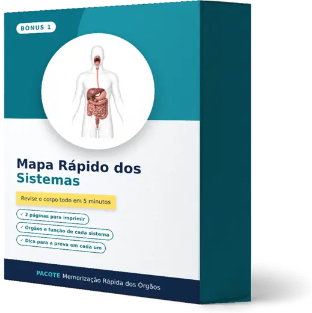
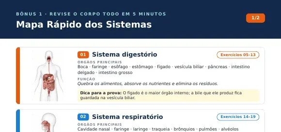
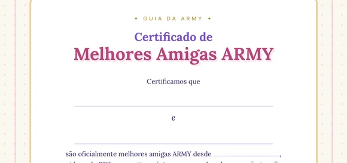

Mapa Rápido dos Sistemas

2 páginas para imprimir com todos os sistemas do corpo: os órgãos principais, a função de cada sistema e uma dica para a prova.
Veja por dentro


Página real do mapa · 2 páginas no total
O que inclui
- 2 páginas A4 para imprimir
- Órgãos e função de cada sistema
- Uma dica para a prova em cada um
- Indica os exercícios do caderno
Para que serve: Revisar o corpo todo em 5 minutos antes da prova.